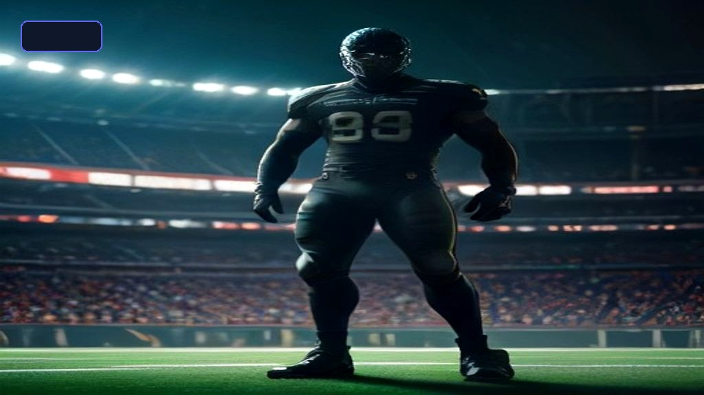

Maxx Crosby Trade Guide 2026: Rumors, Potential Landing Spots, Contract Breakdown & Trade Packages
Explore the complete 2026 Maxx Crosby trade breakdown. Discover prospective trade packages, landing spots, contract details, cap hits, and trade deadline dynamics.

Few defensive players in the modern NFL impact a game quite like Las Vegas Raiders star edge rusher Maxx Crosby. Renowned for his relentless motor, game-wrecking pass rush capabilities, and elite run defense, Crosby has established himself as one of the premier defensive anchors in football. However, as the Raiders navigate franchise transitions, strategic roster restructuring, and quarterback developments, speculation surrounding a potential blockbuster Maxx Crosby trade has escalated into one of the biggest storylines of the 2026 NFL season.
Whether you are a Raiders fan tracking the future direction of the franchise, a fantasy football strategist, or a fan of a contender hoping to land a generational pass rusher, this comprehensive guide covers everything you need to know about a prospective Maxx Crosby trade in 2026.
Table of Contents
- The Anatomy of a Maxx Crosby Trade: Contract & Value
- Why Would the Raiders Consider a Trade?
- Top 5 Trade Landing Spots for Maxx Crosby in 2026
- Comparative Analysis of Potential Trade Packages
- Maxx Crosby On-Field Impact & Career Metrics
- How a Blockbuster NFL Trade Unfolds: Step-by-Step
- Frequently Asked Questions (FAQs)
1. The Anatomy of a Maxx Crosby Trade: Contract & Value
Supercharge Your Workflow with Top AI Tools
Automate 90% of your repetitive tasks, writing, and coding with next-gen AI platforms.
To understand the viability of a Maxx Crosby trade, one must first analyze the economics of elite edge rushers in the current NFL salary cap ecosystem.
Contract Structure & Salary Cap Impact
Crosby signed a lucrative contract extension with the Raiders that solidified his position among the top-paid defensive players in the league. For an acquiring team, trading for a player of Crosby's caliber involves taking on remaining non-guaranteed base salaries while the trading team (Las Vegas) absorbs dead cap penalties tied to prorated signing bonuses.
- Prorated Signing Bonus Dead Cap: The Raiders would incur a dead cap charge corresponding to unamortized bonus money if traded prior to specific contract milestones.
- Acquiring Team Cap Space: The destination team assumes Crosby's base salary and workout bonuses, making him a plug-and-play cornerstone on defense.
- Restructure Potential: Any acquiring team could immediately convert base salary into a signing bonus to lower Crosby's year-one cap hit down to an manageable level.
Historical Trade Precedents
When evaluating Crosby's potential trade value, analysts point to several historical blockbuster defensive trades:
- Khalil Mack (Raiders to Bears, 2018): Cost two first-round draft picks, a third-round pick, and a sixth-round pick.
- Von Miller (Broncos to Rams, 2021): Yielded a second-round and third-round pick for a half-season rental of an aging veteran.
- Bradley Chubb (Broncos to Dolphins, 2022): Fetching a first-round pick, a fourth-round pick, and a player.
Given Crosby's durability, snap-count dominance, and age profile, his baseline trade floor starts at two premium first-round picks.
2. Why Would the Raiders Consider a Trade?
Trading a franchise icon and fan favorite is never easy, but professional football operations require unemotional evaluation of long-term roster construction.
Rebuild Timeline vs. Prime Peak
Maxx Crosby represents the heart and soul of the Raiders. However, if the franchise's championship contention window does not align with Crosby's prime athletic years, holding onto an elite pass rusher while lacking fundamental roster depth can impede a comprehensive rebuild.
Draft Capital Accumulation
By dealing Crosby, Las Vegas could stock their draft arsenal with multiple high-value draft picks over consecutive draft cycles. This draft flexibility allows front offices to:
* Target a franchise quarterback at the top of the draft.
* Rebuild offensive and defensive line depth with modern, cost-controlled rookie contracts.
* Accelerate a full organizational reset under new coaching or management regimes.
3. Top 5 Trade Landing Spots for Maxx Crosby in 2026
If the Raiders decide to field offers, several championship-caliber franchises stand out as ideal fits due to competitive urgency and cap space availability.
+-------------------------------------------------------------------------+
| TOP 2026 TRADE DESTINATIONS FOR CROSBY |
+-------------------------------------------------------------------------+
| 1. Detroit Lions --> Search for ultimate edge rush pairing |
| 2. Chicago Bears --> Defense upgrade to challenge NFC North |
| 3. Atlanta Falcons --> Needing explosive frontline pass pressure |
| 4. Wash. Commanders --> Abundant cap space & dynamic defensive scheme |
| 5. Phila. Eagles --> Aggressive front office roster building |
+-------------------------------------------------------------------------+
1. Detroit Lions
The Lions have established themselves as an aggressive contender in the NFC. Pairing Maxx Crosby opposite Aidan Hutchinson would immediately form the most destructive pass-rushing duo in modern NFL history. Crosby's legendary work ethic fits Detroit's gritty, high-intensity culture perfectly.
2. Chicago Bears
With a young core on offense and a commitment to aggressive defensive play, Chicago possesses both the draft capital and cap space to absorb a elite contract. Placing Crosby alongside Montez Sweat would transform Chicago into an elite pass-defending defense.
3. Atlanta Falcons
The Falcons have systematically upgraded their offense, but their pass rush has frequently lagged behind league averages in pressuring opposing quarterbacks. Adding Crosby gives Atlanta the signature defensive anchor required to secure playoff runs.
4. Washington Commanders
With substantial cap space and a defensive-minded head coaching philosophy, Washington represents an intriguing destination. Crosby would provide instant leadership and transformative edge stability for a franchise on an upward trajectory.
5. Philadelphia Eagles
General Manager Howie Roseman is notoriously aggressive when blue-chip talent becomes available. The Eagles value trench play above all else, making Crosby a high-priority target if trade talks open up.
4. Comparative Analysis of Potential Trade Packages
The table below outlines realistic mock trade packages from top prospective suitors, comparing draft compensation, salary cap fit, and trade likelihood.
| Prospective Team | Offered Draft Assets | Player / Bonus Compensation | Cap Fit Realism | Trade Likelihood |
|---|---|---|---|---|
| Detroit Lions | 2026 1st Rd, 2027 1st Rd, 2026 3rd Rd | Day 2 Draft Pick Adjustment | High | High |
| Chicago Bears | 2026 1st Rd, 2026 2nd Rd, 2027 1st Rd | Young Defensive Starter | Very High | High |
| Atlanta Falcons | 2026 1st Rd, 2027 1st Rd | Conditional 2027 4th Rd | Moderate | Medium |
| Washington Commanders | 2026 1st Rd, 2026 3rd Rd, 2027 2nd Rd | Mid-tier Roster Player | High | Medium |
| Philadelphia Eagles | 2026 1st Rd, 2027 1st Rd, 2026 4th Rd | Future Selection Swap | Moderate | Medium-Low |
5. Maxx Crosby On-Field Impact & Career Metrics
Why is the league obsessed with Maxx Crosby? The answer lies in his statistical profile and unique durability. Unlike modern rotational pass rushers who play 65-70% of defensive snaps, Crosby routinely plays upwards of 90-95% of defensive snaps per game.
Key Career Metrics & Analytics
| Performance Metric | Career Average / Range | NFL Percentile Standing |
|---|---|---|
| Defensive Snap Percentage | 90% - 98% | Top 1% among Defensive Linemen |
| Pass Rush Pressure Rate | 14.5% - 16.2% | Top 5% NFL Edge Rushers |
| Tackles For Loss (TFL) | 15 - 23 per season | Elite League Leader |
| Quarterback Hits | 25 - 35 per season | Top 3 Premier Tier |
| Run Stop Percentage | 8.8% - 10.1% | Elite All-Pro Level |
Crosby is not merely a situational sack artist; he is a complete three-down defender capable of shutting down perimeter running lanes while routinely collapsing opposing passing pockets.
6. How a Blockbuster NFL Trade Unfolds: Step-by-Step
When a superstar player like Maxx Crosby is rumored in trade discussions, the process involves intricate negotiations between front offices, agents, and league officials.
+--------------------------------------------------------------------------+
| NFL BLOCKBUSTER TRADE WORKFLOW |
+--------------------------------------------------------------------------+
| [1] Initial Inquiry & Trade Permission Granted |
| [2] Trade Market Valuation & Asset Matching |
| [3] Contract Restructure or Extension Negotiations |
| [4] Formal Trade Submission to NFL League Office |
| [5] Physical Examination & Roster Designation |
+--------------------------------------------------------------------------+
Step 1: Exploratory Calls & Trade Permission
Interested general managers reach out to Las Vegas inquiring about Crosby's availability. If the Raiders signal willingness, formal permission may be granted to the player's representative to gauge interest and contractual terms with acquiring teams.
Step 2: Compensatory Agreement
Draft pick values are matched against trade chart benchmarks. The Raiders establish a strict baseline expectation (e.g., two guaranteed first-round choices).
Step 3: Contract Modification & Cap Clearance
The acquiring team aligns its salary cap structure to accommodate Crosby's contract, often restructuring existing contracts to create immediate cap relief.
Step 4: Submission to NFL League Office
Both teams submit trade documentation to the league office for official verification, checking cap compliance, draft pick validity, and trade deadline timelines.
Step 5: Physicals & Announcement
Crosby completes a standard medical physical with the new team's medical staff. Upon passing, the trade becomes official and publicly announced.
7. Frequently Asked Questions (FAQs)
LatestTech Editorial Team
Researched, verified, and curated by the LatestTech Hub tech editorial team.